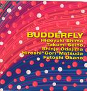

| Artist: | Budderfly |
| Title: | Budderfly |
| Label: | Poseidon Records PRF-002 |
| Length(s): | 71 minutes |
| Year(s) of release: | 2002 |
| Month of review: | [11/2003] |
| 1) | Metamorphosis Of The Budderfly | 19.58 |
| 2) | Essential Talk | 5.32 |
| 3) | O | 4.05 |
| 4) | Bossa Nova Fracture | 10.13 |
| 5) | Yin-Yen Dance | 9.15 |
| 6) | Planet Drum | 8.51 |
| 7) | K'adolo | 13.15 |
Would Essential Talk have anything to do with elephant talk? No, not really. This is where the acoustic guitar and the bass interact in a moody fashion establishing from very low sounding material. Then the bass becomes more distorted for a while, until we return to the darker waters again. O is not a mistyping, but simply the name of the shortish hectic piece that follows the bass ridden foregoing track. The guys sure can play and interact. And it's meander time for the guitar again. Panicky stuff.
Bossa Nova Fracture is the second long track. An easygoing piece of work with light jazzy drumming. A bit too uneventful for my taste. Yin-Yen Dance is similar, maybe a bit more playful and here the two guitars tend to play as if the other is not really there, although sometimes they do get into conversation. Later the guitars crank up, a bit like growling beasts, but the idea stays the same.
On Planet Drum one supposes the drums to dominate. The guitars sound very much like Frippian soundscapes on this one. Very ethereal (of course). Later a more 'normal' guitar sets in for some minimalistic support. Think ProjeKct here. The loudness of the track increases steadily throughout.
K'adolo is the closer, and it is quite a long one. The song opens with easy-going gait. This is the most rocky track among the lot, it seems to me. The guitar still meanders, but the music comes closer and closer to the improvising King Crimson. Still, on the whole the song has too little variation to entice me.